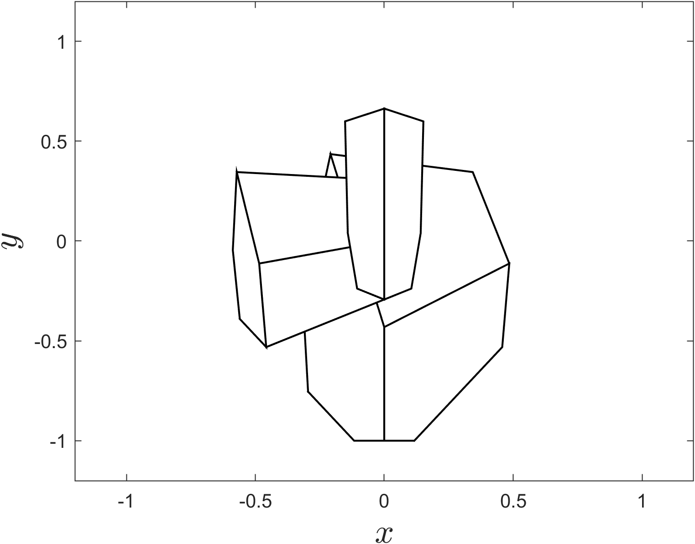
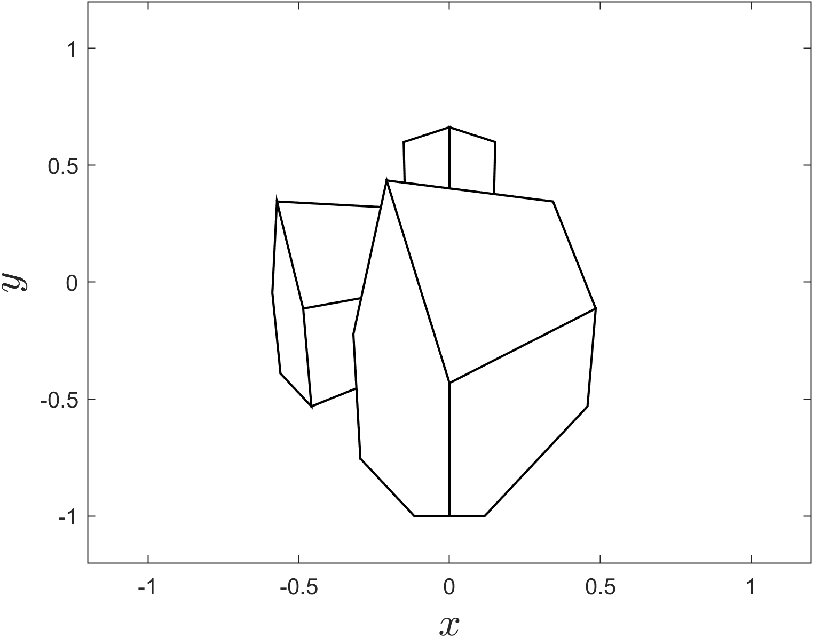

Painter’s algorithm
Contents
Painter’s algorithm#
We saw in the previous section that applying backface culling produces the view of the screen space shown in Fig. 84.
{kind=link}

Fig. 84 The screen space from Example 32 after backface culling has been applied.#
Here the faces of the church object that should appear in the background partially obscure the faces of the house object in the foreground. To correct this we can apply painter’s algorithm which is named after the order of which an oil painter will paint a scene. This is to start with the background elements, followed by the middle ground elements and finishing with the foreground elements (Fig. 85).

Fig. 85 The steps an oil painter uses to paint a scene [Zapyon, 2011]#
The painter’s algorithm is simple. We order the polygons that are front facing in ascending order by the vertex with the largest \(z\) co-ordinate. This means that when we render the polygons in order, those polygons that are closest to the viewer are rendered last therefore obscuring any polygons that are further away from the viewer.
Algorithm 6 (Painter’s algorithm)
Inputs A the front facing space polygons defined by a homogeneous vertex matrix \(V\), and a face matrix \(F\).
Outputs A face matrix containing the screen space polygons listed in descending order by \(z\) distance.
For each face in \(F\)
\(distance \gets \) the largest \(z\) co-ordinate of the vertices in the current face
Sort \(F\) in ascending order of \(distance\)
Return \(F\)
MATLAB code#
The MATLAB function painters(V, F) takes inputs of the vertex and face matrix of a screen space V and F and returns a face matrix with the faces listed in ascending order by the \(z\) distance from the nearest vertex to the viewer.
function Fpainter = painters(V, F)
distance = -1 * ones(size(F, 1), 1);
for i = 1 : size(F, 1)
for j = 1 : size(F, 2)
distance(i) = max(distance(i), V(3,F(i,j)));
end
end
[~, idx] = sort(distance);
Fpainter = F(idx, :);
end
The affect of the painters algorithm is shown in Fig. 86.
{kind=link}

Fig. 86 The polygons in the screen space are rendered in ascending order of their \(z\) distance#